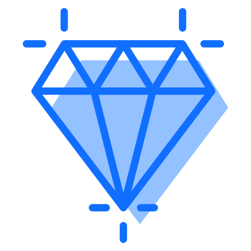

Quem Somos?
Afinal, o que é uma incubadora? Por definição temos incubadoras de startups como empresas ou instituições que auxiliam outras empresas nascentes e/ou em operação que tenham como caractrística a oferta de produtos e serviçõs com uma diferenciação dos demais. Sendo assim, a Fundação Bradesco em projeto com o curso técnico de Desenvolvimento de Sistemas dá a oportunidade para nossos jovens programadores, de serem incubadas em nosso meio, visando dar oportunidade e condições aos nossos alunos.
MISSÃO
Nossa missão é formar profissionais competentes, especializados e com valores. Buscamos a evolução como alunos e profissionais em nossa instituição.

VISÃO
Nossa visão é formar profissionais atuais, com uma nova grade de matérias atualizadas, proporcionamos o melhor para nossos alunos saírem prontos para o mercado de trabalho atual.

VALORES
Nossos valores são baseados na Fundação Bradesco e seu fundador, Sr. Amador Aguiar, buscamos assim o respeito, a honestidade, a igualdade, o comprometimento e a excelência.
Conheça nossa estrutura
A Bradesco fornece por meio da Fundação Bradesco e do seu Curso Técnico de Desenvolvimento de Sistemas toda a estrutura disponivel para nossos alunos, desde salas climatizadas até notebooks individuais para cada aluno, além do próprio site, e 3 professores de excelência,totalmente especializados nas áreas de tecnologia, para incubar cada startups de seus alunos.

3 Startups
FB1T, On Livery e Log System
25 Pessoas
Turma de 25 alunos

+10 Projetos
Mais de 10 projetos realizados até o momento na soma das startups

1200 Horas
Carga horária de 1200h de estudo
Conheça nossos colaboradores
Fundação Bradesco
A Fundação Bradesco, sendo a sede e criadora do Curso Técnico, colabora com toda a estrutura, apoio e oportunidades fornecidas.
Fabiano Ramos
Sendo um professor de excelência e doutorado na área de design educacional, ele é o maior contribuinte para as questões envolvendo front-end, design e experiência de usuário
Fernando Trindade
Sendo um professor especializado em diversas áreas, se destaca em nosso curso pela experiência com inteligências artificiais, conhecimento das linguagens de back-end e lógica de programação.